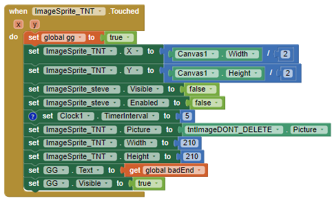

4.2 - Lights Off Tutorial
1. This app presents a new type of event which you haven't encountered before. What is that new event? How often is it triggered?
A new type of event that is presented in this app which I haven’t encountered before is clock.timer. It is triggered depending on the interval it is set on but on default it triggers every one second.
2. Consider the apps you've developed so far. Can you list all the different events your apps have responded to? What other events do you think an app can respond to? Explore some of the components in App Inventor and see what event handlers they have.
Considering all the apps that I have developed so far, different events that my apps have responded to include buttons when clicked, canvas when touched, dragged, etc, Image sprite when touched, Listpicker before and after picking, text to speech when shaking device, etc. Other events that an app can respond to include a notifier when an action occurs and selecting a timer.
3. What are the advantages of writing procedures in programming? Use the procedures you wrote for this app as examples in your response.
The advantages of writing procedures in programming include making a line of code less complex and making it easier to organize and read. In other words it would make long complex lines of code to a less complex and less lines. For example, in our app the procedure app uses a procedure that randomizes the location of our sprites within the canvas when touched or through out the time interval.
4.3 - Lights Off Projects
1. Describe the purpose of each enhancement that you added to your app. Give brief descriptions of the enhancements and provide screenshots of important blocks and describe how you used them to solve certain programming problems. Include these descriptions in your write-up, below.
One enhancement that was added to the app was a second sprite that makes the game harder. It is essentially the opposite of the main sprite as it penalizes the player for touching it by causing the player to lose two points off the score and ten seconds off the timer every time it is touched.

2. When the user touches an ImageSprite, both the Canvas.Touched and ImageSprite.Touched events are triggered. This is important for more complex games. For instance, suppose there are "good" and "bad" sprites in your game. If you hit one, you earn a point. If you hit the other, you lose two points. If you hit the Canvas and don't hit the ImageSprite, you lose 1 point. How would you code this?
If I were to hit the canvas and missed the ImageSprite, to lose one point what I would do is make it where I would lose one point for every time I click on the canvas without clicking the ImageSprite. The way I would code this is by setting up an if-else condition in which when canvas is clicked and if touching the sprite is false then the score will be deducted by one point.
3. How do you speed up the movement of the ImageSprite? What is the fastest it could move?
To speed up the movement of the ImageSprite we need to change the timer that changes the sprite’s position to a lower interval meaning it will take a shorter amount of time to change its position to a random location, thus speeding up. The fastest it can move is any number that is not zero. In other words, it can be the lowest number before zero.
4.4 - Logo, Part 1
1.Include a screenshot of your app's face drawing, and the code involved, showing the use of a loop and a procedure. You can take a screenshot on most Android devices by pressing the power button and the volume down button at the same time and then emailing the photo from the gallery to yourself, or uploading the image to Google Drive. To practice for the Create task, describe how two of the algorithms (procedures that you wrote) in the code combine to form a bigger algorithm (the drawFace procedure).
Two algorithms used include the code to make the big square and the mouth. The big square algorithm creates a square that represents the face and when combined with the mouth algorithm, a line is created inside the square that represents the mouth of the face.
2. Can you draw a triangle with this set of Logo commands? Discuss how or why not.
No, it is not possible to draw a triangle with this set of Logo commands, the only thing that this can draw squares or anything that requires a 90 degree turn. You cannot draw a triangle with a 90 degree angle turn.
3. Discuss: If you were designing the Logo language, how would you change some of our basic commands so that it would be easy to draw a triangle and easier to draw other shapes -- i.e., what should the basic commands do that would make drawing easier.
One basic command that I would change is the turn function, to easily draw other shapes there should be an option to change the angles (degrees) of the turn, to make a triangle for example, instead of turning 90 degrees to make a square, there would be a turn at 60 degrees. With a 60 degree turn the robot is able to move forward and turn, three times to create a triangle.
4. What weaknesses do you find in using the procedures (the abstractions) we gave you -- forward, turn -- for drawing simple shapes? How would you change the definitions of these procedures to make it easier to draw shapes? Give a specific example that illustrates how a more powerful set of procedures would improve things.
The main weaknesses in using the procedures for forward and turn to make simple shapes is the fact that it is difficult to change the sizing of the shapes and it is hard to make new shapes because we would need to go into the code to change the degrees of the turn. To make it easier to draw shapes what I would do is create a text input for the values that determine the length of a line and the angle of the turn. If a procedure had the option to change angles then many shapes can be created, like triangles, trapezoids, pentagons, etc.
4.5 - Coin Flip Simulation Tutorial
1. Write an if/else statement to express the following real life situation. Mary likes ice cream and always chooses chocolate unless there is no chocolate in which case she chooses strawberry. But if there’s no strawberry either then she settles for vanilla, which, for some reason, is always available.
if (chocolate = true) {
get chocolate ice cream
}
else if (strawberry = true) {
get strawberry ice cream
}
else {
get vanilla ice cream
}
2. We didn’t need it for the loop in this lesson, but the number element in the For each number loop is a local variable whose value changes automatically on each iteration of the loop. For example, in this loop number would start at 1 and then go to 2, 3 and 4. And this value can be used in the body of the loop, as shown in this example. Given that, trace through this loop and figure out what value global sum would have when the loop finishes.

The value of global sum would be 10 when the loop finishes. As the order of summation goes by, “0 + 1”, “1 + 2”, “3 + 3”, to “6 + 4” which is 10.
3. App Inventor’s random-integer block is an abstract model of randomness -- i.e., an abstraction of real randomness such as flipping a real coin. What would you say about the random-integer block if you ran the coin flipping simulation 10,000 times and the result was that it came up heads 55% of the time?
One thing I would say about the random integer block if there was a 55% chance of getting heads from 10,000 flips is that this would be a great example of pseudo randomness and not a good example of real randomness as there is no 50:50 ratio between heads or tails.
4.6 - Coin Flip Experiment
1. (POGIL) According to your results, does App Inventor's PRNG provide a good model of randomness?
App Inventor’s PRNG provides an adequate model of randomness. There is around a 50% chance for the coin flip to land on head. In other words, there is around an even RNG on either landing on heads or tails. Although over more and more flips it is slightly increasing in percentage every time we conduct a trial, from 49% to approximately 51%.
2. (POGIL) A friend claims that flipping a coin 100 times and finding that it comes up heads only 45% of the time shows that the coin is biased. How should you reply?
My friend is being non scientific in the fact that he was only doing one trail, on the contrary, he should conduct more trails to obtain a more accurate and precise conclusion. Doing only flipping one hundred times for only one trail leads to less opportunity to determine if the number bias is precise/accurate or not. While doing an increasing amount of trials will lead to a closer result to determine if it is truly 50:50. I would tell my friend to do more trials, enough when there becomes a trend in the percentage of heads. Then they can reach a conclusion, not after the first trial.
3. Because we are using a coin flip app, this experiment really tests only that App Inventor's random integer block generates a 1 around half the time. Is this a sufficient test for App Inventor's PRNG? What other experiments might you do to increase your confidence in App Inventor’s PRNG?
No this is not a sufficient test for App Inventor’s PRNG model. To increase my confidence in App Inventor’s PRNG what I would do is conduct even more trials with more flips per trial to make sure that there is a good system of randomness.
4.7 - Pseudo Random Numbers
1. Consider the following Dilbert cartoon. Would it be possible for a PRNG to spit out 6 NINEs in a row?

It is very unlikely for a PRNG to produce six values of nine in a row, as its model would most likely not allow the same numbers to be reproduced. In the end, it all depends on the functionality or method of how the PRNG works, but to reiterate, it is highly improbable for a PRNG to produce six value of nines in a row.
2. Are slot machines fair? Why or why not?
Slot machines are perfectly fair as they are truly random based off of mathematical calculations. There is nothing rigged out slot machines meaning that anyone who decides to play will get an equal chance of winning.
3. Is it possible to devise a method that would allow you to win consistently on a slot machine?
The possibility to devise a method that would allow one to win consistently on a slot machine depends on how complex a PRNG’s calculation system is, but since it is a slot machine, one can assume that there will be a very complex system to calculate the machines randomness meaning that it will be very difficult to predict the pattern of what will be produced. In other words, the only method to win consistently is solely based on chance.
4.8 - Real World Models
1. What are the main differences between Bill Nye's solar system model and the Second Life model?
The main difference with Bill Nye’s solar system model and the Second Life model, is that Bill Nye’s solar system is scaled proportionally with what the actual solar system would be while the Second Life model was not scaled, but only represented how the solar system would look virtually.
2. (POGIL) What would happen if there were lots more wolves than there are bunnies? Would the wolves live forever? Record your hypothesis, prediction and experiment results.
If there were to be more wolves than bunnies, then the wolves will eventually eat up all of the bunnies and will lead them to die. After doing the experiment this was true on the medium-sized forest for both toroid and island as the wolves ate all of the bunnies and ended up dying out. But if it was a large forest size the wolves will live forever as the bunnies will grow fast enough for them not to die out allowing the wolves to eat.
3. (POGIL) This model chose to include certain features and exclude other features. For example, this simulation only includes rabbits, wolves, and grass but there are other predators of rabbits and other food sources for rabbits. Why do you think the creators focused on these data elements and not others? How might this introduce bias (concentration on or interest in a particular area) into the simulation?
The creator didn’t include the entire ecosystem because the point of the simulation is the relationship between wolf, rabbit, and grass. The other organisms may be to distracting for the user. The creator focus on rabbit, wolf and grass because it’s a relatively simple concept to understand. This might introduce a bias towards rabbits in this simulation because wolves doesn’t have interspecies competition.
4.9 - Abstraction: Inside the CPU
1. Which generation of the 4-bit simulators above is the most abstract? Why?
The most abstract generation of the 4-bit simulator is the second generation which uses an assembly language that replaces 0s and 1s using symbolic names for instructions and data.
2. Explain the purpose or function of the RAM and the CPU.
The RAM’s function is to store the computer's programs and data temporarily while power is on. The CPU's function is that part of the computer's hardware that interprets and process the computer program.
3. Describe in your own words the difference between the fetch and execute steps.
The fetch step essentially takes the instruction and the execute step does what the instruction is asking.
4. Summarize the differences between assembly language and machine language programming.
Assembly language is low-level language that uses symbolic names, rather than binary sequences of 0s and 1s, to represent the machine language instructions, while machine language programming is a programming language that is directly readable by the computer’s CPU. It consists entirely of 0s and 1s.
4.10 - Impacts of CS: Privacy
1.Is it possible to identify someone, perhaps a patient, knowing just the gender, birth date, and zip code? Why or why not?
It is possible to identify someone just by knowing their gender, birthdate, and zip code. This is possible by connecting the data to a specific person, or taking the given data and try to find someone who matches that data within a specific location.
2. Are electronic documents like paper documents? Write 2-3 sentences comparing and contrasting them.
Electronic documents are somewhat like paper documents in the general concept that they hold information for people to see, but they are different in the sense that electronic documents are able to be accessed at any place, while paper documents can only be accessed where the physical copy is located. Electronic documents are also able to be sent faster compared to paper documents and are more secure due to encryption than paper documents.
3. Earlier in the course, you built the Map Tour app. In the final version, what kind of data is collected from the user? Does the user know the data is being collected? Can they opt out of providing data and still use the app?
The users location is collected in the final version of the Map Tour app that was created. Yes the user know that location is being collected as it is their choice to select their location or not. They can opt out of providing their location by not using the self-location feature and still have full functionality of the app.
4. Is the Privacy Act effective? Explain why or why not.
The Privacy Act is not effective because private data is still retrievable to public data as information about the sender and receiver of communications is not as strictly regulated in the act.
5. Are you willing to trade some of your privacy for the convenience of having a computer or a company recommend products to you? Why or why not? Under what circumstances?
I am willing to trade some of my privacy for the convenience of having a computer, as well as have a company recommend products to me. I am fine with this because It is not harming me as I am not the only person whose data is being retrieved. I believe the purpose of companies taking my data is not used for malicious intent but instead used to promote the market and products that I may be interested in buying. In addition if I do not want to see these ads because I have already purchased something I can simply use browser extensions that an ad blocker.
6. How do we leave digital "footprints and fingerprints?" Do you think this is important for everyone to know? Why or why not?
From searches to purchases, these data are stored from the website or company that we have purchased from or searched on. I think it is very important for everyone to be aware with leaving digital footprints and fingerprints, especially in sketchy websites that potential contain malware or other factors that may take your data for negative use, or use what things that you have said online against you.
7. How have social media platforms such as Twitter, Instagram, Snapchat, etc. affected our privacy?
Social media platforms such as Twitter, Instagram, Snapchat, etc, are now places where people can document their entire life, thus removing their privacy, but this privacy that they are sacrificing is only possible because they consent to do it. These platforms do not force people to put their lives online, they voluntarily upload it. Social media can take away our privacy if we choose to put ourselves on the internet.
8. In this course, you are building apps that collect data from users, the device, and its sensors. What responsibilities do we have as app developers for the data we collect?
Since we are collecting data from users responsibilities that we must follow as app developers include, being confidential and respectful for our users data. Not allowing the data to go into other purposes other than allowing the app to function.
9. Search the web for a recent news story that deals with privacy. LINK to the article and then write a paragraph summarizing the article, including any beneficial or harmful impacts on privacy.
Building a World Where Data Privacy Exists Online -
This article focuses on the privacy of people’s data online. This article talks about how anyone can have their data taken on the internet, more specifically though companies who are able to take and sell such data often without users knowing that their data has been taken. Their privacy becomes compromised after signing it over to companies by clicking the accept button. They also say that when people go online their data is collected and stored on centralized servers that are vulnerable to be attacked, thus risking users’ data. The main purpose of this article is to shed light on a new form of technology or programming that Professor Dawn Song and her team is developing, a system that protects the privacy of users through specialized computer chips and blockchain technology.